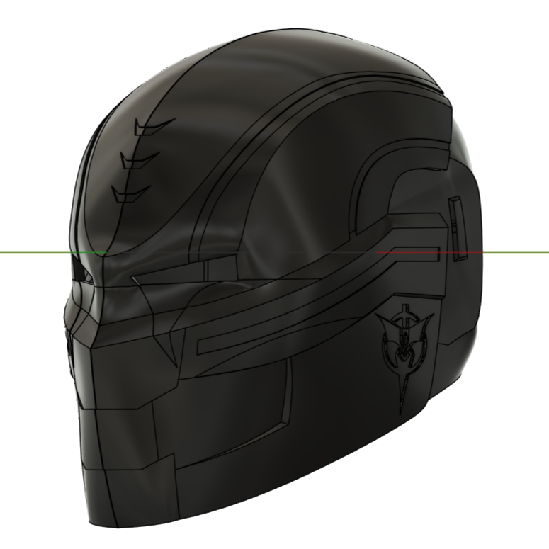
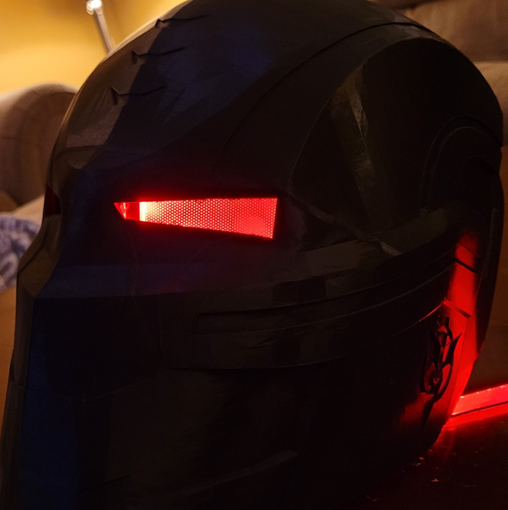
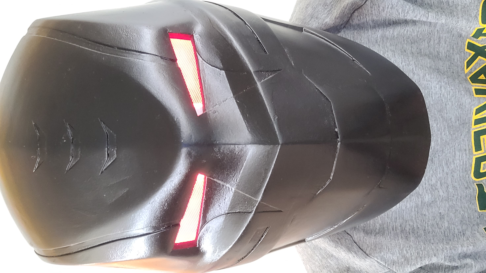

The completion of my first helmet movatived me to learn how to 3D Model. I taught myself how to use Fusion 360, which allowed me to construct a helmet of my own design. I 3D modeled a helmet based off of Crossbones's helmet from Captain America: The Winter Soldier.


I had many learning opportunities while constructing this helmet, which led me to purchase my first 3D Printer, the Creality CR-10 V2. This is where I went "coo coo for coco puffs" for 3D printing. I taught myself how to use Cura, a slicing software, which helped me to learn 3D printing more in depth. Cura enabled me to print parts with custom settings and custom supports. This made it easier to sand, prime, and spray paint the final result. To sand it, I used sandpaper between 180 and 1000 grit. Next, I primed it with Rustoleum Filler and Sandable Primer. Then, I spraypainted it with Duplicolor Perfect Match Toyata Black. Finally, I installed Acrylic LED Eye panels.

Parts List:
- 3D Printed PLA Parts
- Duplicolor Perfect Match Black
- Flexible Led Eye Panels